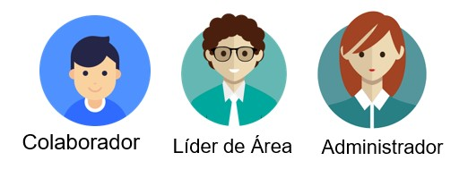

Tipos de Usuarios¶
En la aplicación de Mis Méritos existen tres tipos de usuarios, según sus operaciones y tareas a desempeñar dentro de la aplicación. Estos son:
Usuario Colaborador¶
Corresponde a un usuario base o empleado de la empresa, el cual puede asignar Méritos Propios a sus pares, consultar el catálogo de Incetivos, y relizar Canjes.
Usuario Lider de Área¶
Además de las acciones que puede realizar un Usuario Colaborador este tambien puede asignar Méritos Empresariales.
Usuario Administrador¶
Este Usuario es el encargado de configurar la aplicación y darle seguimiento a esta, realiza tareas como Gestión de los Colaboradores, Creación de Méritos Empresariales, Definición del Presupuesto, Aprobación de Canjes, Mantenimiento del catalogo de Incentivos, entre otras.